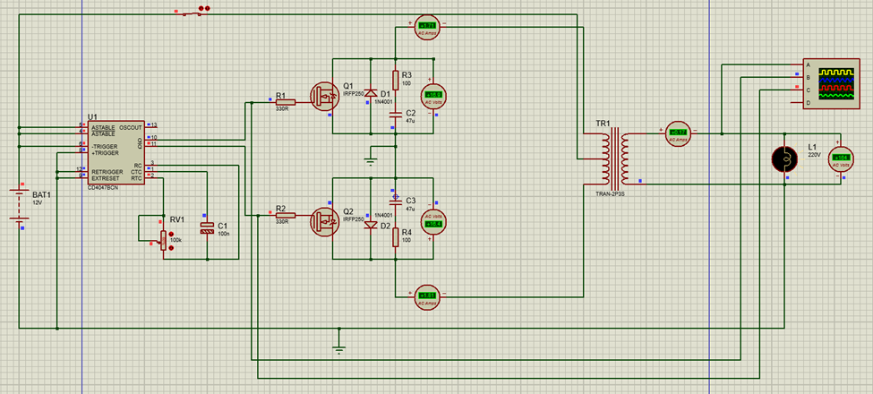
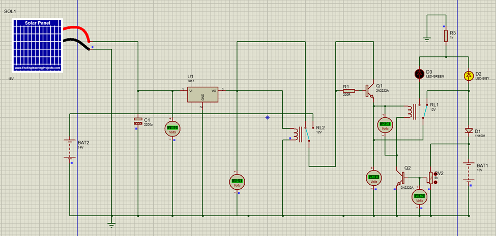
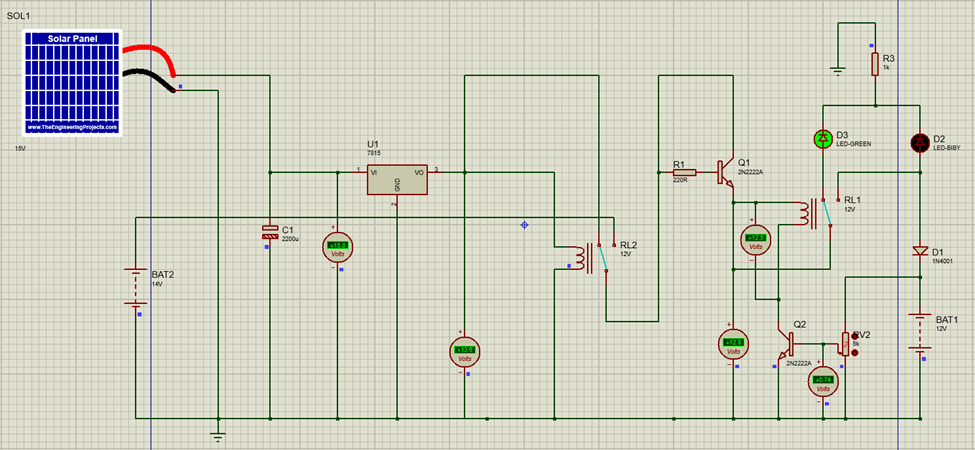
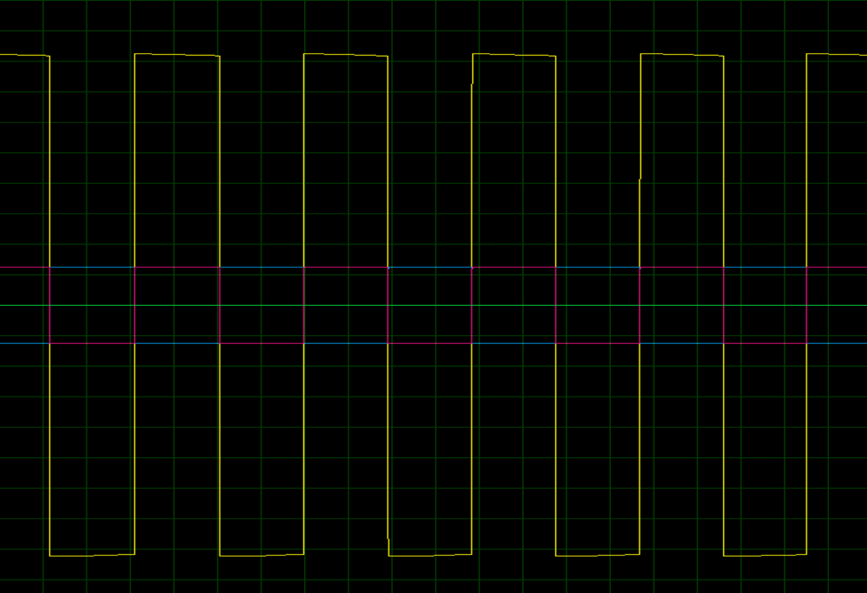
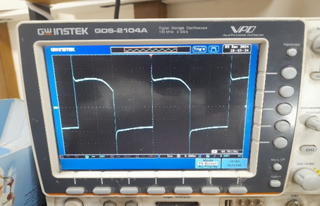
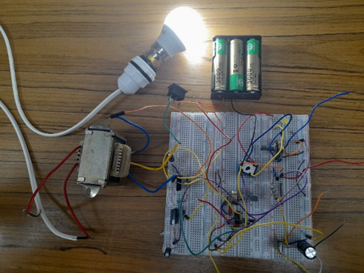
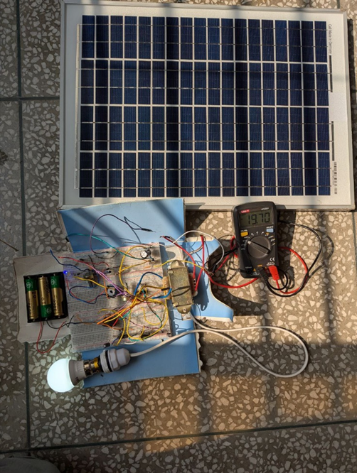

Power Electronics · 2024–2025
A solar-charged 12 V push-pull inverter with relay-based battery protection, simulated in Proteus and built on breadboards
A CD4047 oscillator drives two MOSFETs into a centre-tapped transformer to make 50 Hz AC from a 12 V battery, while a solar charger uses one transistor and a relay to send panel current either to the battery or, once it is full, to a separate “grid” branch. Group project for EEE 316, Power Electronics Laboratory, BUET.







| Subsystem | Main parts | Cost (BDT) |
|---|---|---|
| Inverter | Transformer, 2 MOSFETs, CD4047, breadboards, 3 W bulb | 1,130 |
| Solar charger | Solar panel (1,800), relay, 2N2222A, 7815, 2,200 µF capacitor | 2,585 |
| Total | As listed in the course report | 3,715 |
This is a prototype, not a grid-tied system. No power is exported: the “grid” branch only lights an LED, and no AC-to-DC path, synchronisation or sine-wave stage was built, so “bidirectional” describes the intended architecture. The load was a 3 W lamp on breadboards with spot voltage, current and frequency checks, so no efficiency or exported-energy figures are claimed. My part: modifying and testing the simulations, hardware implementation, testing and debugging, within a team of six.